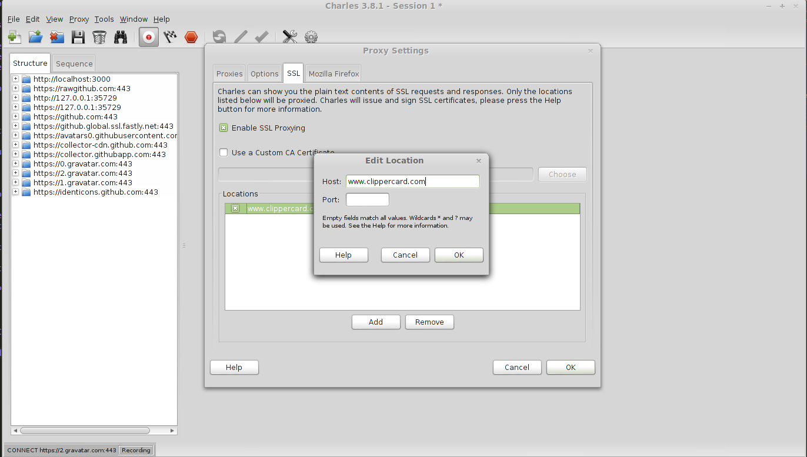
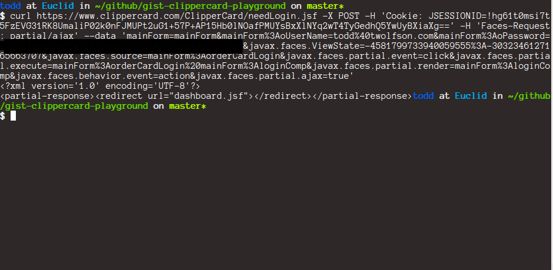

Clipper API
Research (up to dashboard)
Research existing solutions
I started by looking for existing GitHub solutions to see if I can gain knowledge from their implementations.
https://www.google.com/search?q=clipper+card+api
Two were found:
- anthonywu/clippercard, a Python package from 1 year ago
- Check Clip, an API and Alfred extension that have been taken down
Cold start
I skimmed through anthonywu/clippercard but decided to start cold anyway. I navigated to https://www.clippercard.com/ClipperWeb/index.do, opened Firebug, and set Network tab to persist data.
Persistallows me to review network traffic from previous pages after navigating to another page.
Next, I filled out the login form and proceed to the next page.
The request was captured and contained the following information

Next, I took copied the request to its curl equivalent via Firebug's Copy Request as cURL
Unfortunately, this yielded an undesired sessionExpired result
I decided to start removing parameters until it stopped replying with the sessionExpired response.
Then, I took that and slapped it into a node.js script. Unfortunately, I realized that I was requesting for something that I did not want.
https://gist.github.com/twolfson/9543183/f9c66630353a4d05e805458fbf241a25e900b05c
Change of plans
I went back to anthonywu/clippercard and attempted to reproduce his actions via curl. Unfortunately, the results turned up dead.
I marked this as a dead-end and went for the heavy weaponry, Charles Proxy.
I set up Charles Proxy to intercept all POST traffic to/from www.clippercard.com and ask me what I wanted to do with it.
This was done via Charles' breakpoints feature and SSL proxying.

Then, I navigate to our login page again, https://www.clippercard.com/ClipperWeb/index.do
When Charles is proxying SSL, you must accept SSL certificates. I did that.

Unfortunately, the home page was slowing down due to proxying so I started fiddling with URLs. I wound up landing on https://www.clippercard.com/ClipperCard/needLogin.jsf
This page was a blessing in disguise as the form fields were simpler (e.g. did not have _14 on the end which could be random).
I attempted to log in once via this page. Success!
I logged out and logged in again from it. This time, I aborted the request and transferred it into curl. I witnessed that I could re-request this request infinite times.
Using that, I trimmed request parameters (cookie, form, and header) until it returning the redirect content.

Then, I transferred to my node script.
https://gist.github.com/twolfson/9543183/9c22c76ac6239caf30efefac99d240e31cd65ea2
I removed the hardcoded JSESSIONID/ViewState and started scraping the GET version of the page for dynamic values/using a cookie jar to collect cookie values.
https://gist.github.com/twolfson/9543183/85eaa5be1bde5428f9428ccd61539b7432889063
Eventually, I deduced the necessary components and called it a day.
https://gist.github.com/twolfson/9543183/bf41d36d648ef08c0cfecc68994d2d0838641e74